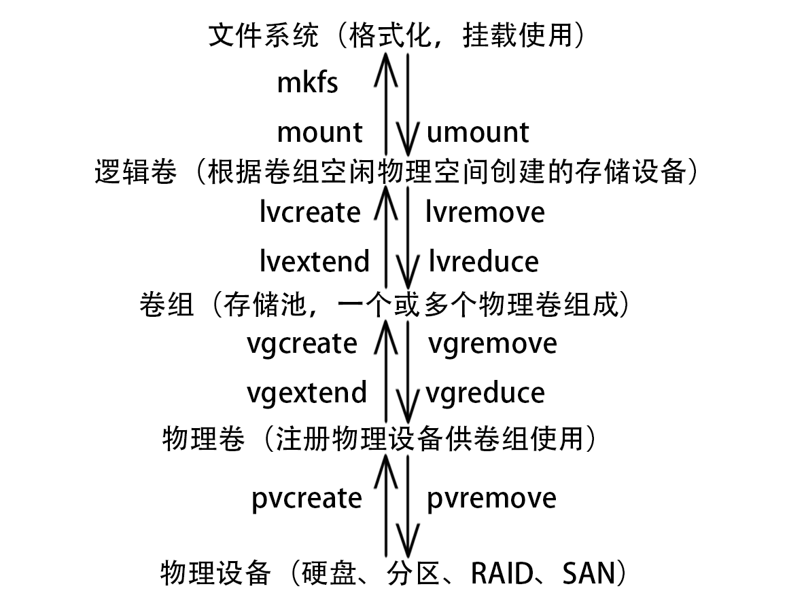

第3天
分区管理
MBR 分区方案（BIOS 引导）
- 分区工具
fdisk - 可以引导 32 位 或 64 位的系统
- 主引导记录包含 64 字节硬盘分区表，每个分区信息需要 16 字节
- 最多 4 个主分区，可以把一个主分区作为扩展分区，扩展分区可分为若干逻辑分区
- 主分区可以激活成为活动分区，用来引导系统
- 扩展分区不能直接使用，必须分为逻辑分区才可以使用
- 2T 以上硬盘不适用
GPT 分区方案（UEFI 引导）
- 分区工具
gdisk - 只能引导 64 位系统
- 最多 128 个分区，全是主分区
- 最大支持 18 EB，1EB = 1024PB，1PB =1024TB
格式化、挂载
lsblk查看块设备blkid查看块设备 UUID（判断是否有文件系统）mkfs.FileSystem格式化指定块设备，为其添加文件系统mount用于临时挂载指定文件系统，umount用于卸载文件系统mount -a会根据/etc/fstab文件挂载所有文件系统/etc/fstab文件添加对应文件系统可实现开机自动挂载- 使用 autofs 可实现按需自动挂载
autofs
yum -y install autofs
vim /etc/auto.master
mnt（挂载目录上级目录） /etc/automount（映射文件）
vim /etc/automount
挂载目录 -fstype=文件系统类型 :/dev/sd...
systemctl restart autofs
systemctl enable autofs
SWAP 交换空间
- 交换空间用于扩充系统 RAM，应将交换空间使用保持最低限度
- 交换空间的文件系统为 swap，格式化使用
mkswap命令 swapon用于临时激活交换空间swapon -a会根据/etc/fstab文件激活所有交换空间swapon -s查看目前激活的交换空间swapoff用于取消指定交换空间/etc/fstab文件添加对应交换空间可实现开机自动激活，挂载点为 swap
逻辑卷

故障排除
系统启动
- BIOS/UEFI 硬件自检
- 启动加载器（grub2）
- kernel 和 initramfs 初始化
- systemd 执行默认 target
部分 target
| 目标 | 用途 |
|---|---|
| graphical.target | 图形化界面 |
| multi-user.target | 字符行界面 |
| rescue.target | 基本系统初始化完成 |
| emergency.target | initramfs 回转完成，系统只读方式挂载与 / 上 |
重置 root 密码
- 开机启动菜单按e
- linux16 结尾加 rd.break
- Ctrl+x 执行
- mount -o remount,rw /sysroot
- chroot /sysroot
- echo redhat | passwd --stdin root
- touch /.autorelabel
- exit
- exit
/etc/fstab 文件故障
- 开机启动菜单按e
- linux16 结尾加 systemd.unit=emergency.target
- Ctrl+x 执行
- 输入 root 密码
- mount -o remount,rw /
- vim /etc/fstab 修正错误
- reboot
/boot/grub2/grub.cfg 故障
- 使用外部介质引导安装镜像
- 选择 Troubleshooting
- 选择 Rescue a CentOS system
- 选择 1）Continue
- chroot /mnt/sysimage
- grub2-mkconfig > /boot/grub2/grub.cfg
- exit
- exit
/boot 误删
- 使用外部介质引导安装镜像
- 选择 Troubleshooting
- 选择 Rescue a CentOS system
- 选择 1）Continue
- chroot /mnt/sysimage
- 重新安装 kernel 包（yum reinstall kernel 或 rpm --reinstall -vh /PATH_TO_CD/Packages/kernel*.rpm）
- grub2-install /dev/sda
- grub2-mkconfig > /boot/grub2/grub.cfg
- exit
- exit